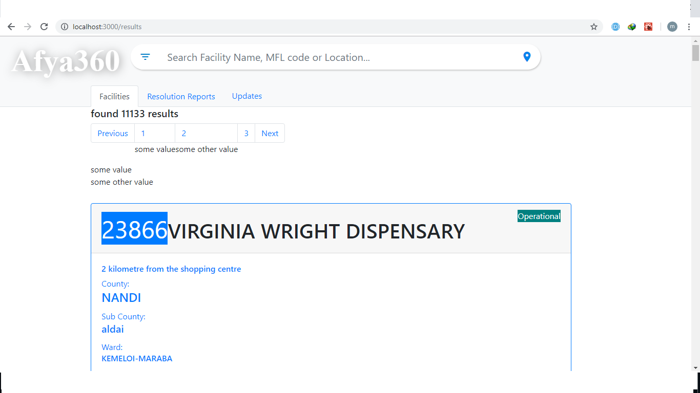
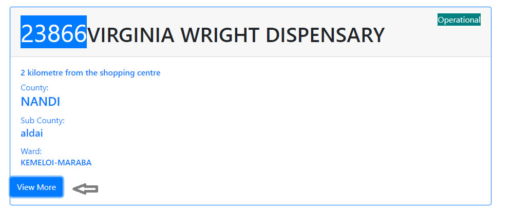
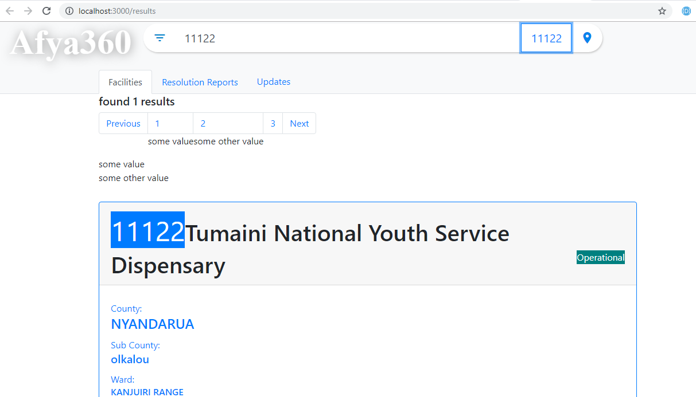

How to Search¶
Search by Name¶
Once the app is opened, type a name to a specific facility and press enter. This can be the whole name or a part of it. Then suggestions to different facilities are made with information on it.
Image:search result page
View more¶
Once results are found an option of view more can be checked using a button in the result of a facility.This loads more information on the facility.
Image:view more button
Search by code¶
Search by code allows a live search but only gives one result. This is the fastest way to search for a facility in the application.
Image:Search by code
Search by filters¶
This feature allows one to search using different components from organisation units to services. You then query it and search.
image:querries